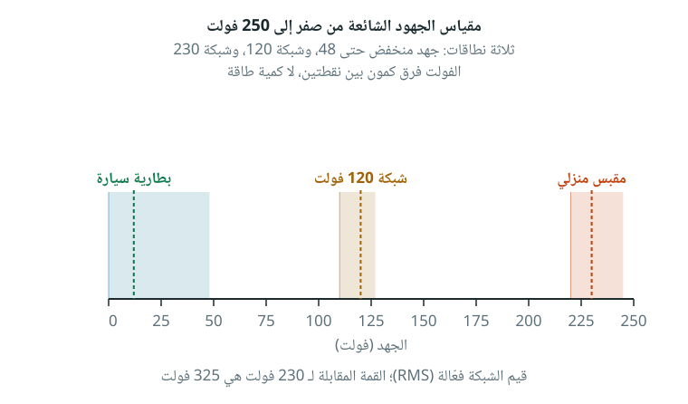

الجهد الكهربائي
Electric Potential Difference (Voltage)
الطاقة المبذولة لنقل وحدة شحنة بين نقطتين، V = W/q، ووحدته الفولت أي جول لكل كولوم. يقاس على التوازي لأنه فرق، وقيمته الفعّالة 230 فولت في الشبكة المنزلية تعني قمة 325 فولت.
الجهد الكهربائي بين نقطتين هو الطاقة المبذولة لنقل وحدة شحنة بينهما: V = W/q، ووحدته الفولت، أي جول لكل كولوم. الفولت إذًا ليس كمية طاقة بل نسبة، ولهذا قد يحمل مكثف صغير بجهد عالٍ طاقة أقل من مكثف كبير بجهد منخفض.
في الدارة العملية يظهر الجهد أثرًا للمجال الكهربائي الذي تنشئه الشحنات المفصولة. يقاس على التوازي دائمًا، لأن الفولتميتر يقيس فرقًا بين نقطتين فلا يجوز وصله على التوالي، ولهذا يُصنع بمقاومة داخلية عالية حتى لا يسحب تيارًا يغيّر ما يقيسه. أما الشبكة المنزلية فجهدها 230 V فعّال، وهو متوسط تربيعي لا قيمة لحظية.
كيف تعمل الظاهرة؟
ينشأ فرق الكمون من فصل شحنات: كل شحنة تُزاح ضد مجالها ترفع طاقة الوضع للنظام، والجهد هو هذا الفرق مقسومًا على الشحنة. في البطارية يفصل التفاعل الكهركيميائي الإلكترونات على طرف والكاتيونات في الإلكتروليت، فيستقرّ فرق كمون كهركيميائي. في المولّد يدوّر المجال المغناطيسي شحنات حرة داخل الموصل فتتراكم على الأطراف حتى يوازن مجالها الداخلي القوة الدافعة. عند إغلاق الدارة يسقط جزء من الجهد داخل المصدر بحسب مقاومته الداخلية، فيقرأ الفولتميتر عند الأطراف V = ε − I·r، لا ε.
العلاقة بالأرقام
العلاقة بين القمة والقيمة الفعّالة في موجة جيبية: V_rms = V_peak/√2. شبكة 230 V فعّال تعني قمة 325 V ومدى من القمة إلى القمة 650 V، وهذا سبب وجوب عزل يتحمل أكثر من 230 V بكثير. الفولت نفسه يُشتق من الوحدات الأساسية: 1 V = 1 J/C = 1 kg·m²/(s³·A). خلية سيليكون شمسية واحدة تعطي نحو 0.6 V، فتُوصل 60 خلية على التوالي للحصول على قرابة 36 V في وحدة شمسية نموذجية.
مفاهيم متقاربة
الخلط الأول بين الجهد والطاقة، فيُظنّ أن الجهد العالي خطر بقدر الطاقة المخزونة؛ الخطر يقيسه التيار المارّ في الجسم، والجهد يحدّده عبر مقاومة الجسم، والطاقة تحدد مدة الأثر وحرق الأنسجة. الثاني بين الجهد والقوة الدافعة الكهربائية: الأولى فرق بين نقطتين داخل دارة، والثانية خاصية للمصدر تُقاس عند فصله، وفي دارة مغلقة V = ε − I·r. الثالث أن الجهد عند نقطة بلا مرجع لا معنى له؛ المرجع عرفي، والأرض اختيار عملي لا حقيقة فيزيائية.
حدود التطبيق
لفظ الجهد يفقد وحدته خارج التيار المستقر: في الترددات العالية يصير موزّعًا على طول الناقل، وطول الموجة على 1 GHz نحو 30 cm في الفراغ، فيقرأ الفولتميتر ذو السلك الطويل قيمة لا تعني نقطة واحدة. وفي دارات التغذية الراجعة قد يوجد فرق كمون بين مدخلي مضخّم العمليات دون أن يظهر على أي طرف من أطرافه. وفي الكهرباء الساكنة تتوقف قيمة الجهد على مرجع تختاره، فلا يُقال جهد كرة بل جهد الكرة بالنسبة إلى الأرض.

| الكمية | القيمة | المصدر |
|---|---|---|
| تعريف الفولت | 1 جول/كولوم | [3] |
| الجهد الفعّال للشبكة المنزلية | 230 فولت | [2] |
| قمة الجهد المقابلة | 325 فولت | [2] |
| المدى من القمة إلى القمة | 650 فولت | [2] |
المصادر
- 1 Electric Potential and Potential Difference — OpenStax, University Physics Volume 2. openstax.org/books/university-physics-volume-2/pages/7-2-electric-potential-and-potential-difference · اطُّلع عليه 2026-11-16
- 2 Alternating Current versus Direct Current — OpenStax, College Physics 2e. openstax.org/books/college-physics-2e/pages/20-5-alternating-current-versus-direct-current · اطُّلع عليه 2026-11-16
- 3 SI Units — NIST, Physics Laboratory. physics.nist.gov/cuu/Units/units.html · اطُّلع عليه 2026-11-16
استشهد بهذا المصطلح
الصيغتان مبنيتان من بيانات الصفحة نفسها: العنوان والتاريخ ورابط النسخة المنشورة.
الجهد الكهربائي — Electric Potential Difference (Voltage). (2026). ديوان المعرفة — انفراد. https://infiradev.com/diwan/terms/voltage.html
@misc{voltage2026,
title = {الجهد الكهربائي},
titleaddon = {Electric Potential Difference (Voltage)},
howpublished = {{ديوان المعرفة — انفراد} — مرجع علمي عربي},
year = {2026},
url = {https://infiradev.com/diwan/terms/voltage.html},
urldate = {2026-11-16},
note = {مراجعة علمية: مراجعة آلية — ديوان المعرفة (روابط المصادر + عقد المحتوى + وجود الرسم) 2026-11-16}
}
راجعه: مراجعة آلية — ديوان المعرفة (روابط المصادر + عقد المحتوى + وجود الرسم) 2026-11-16 · 2026-11-16 · آخر تحديث 2026-11-16